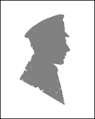
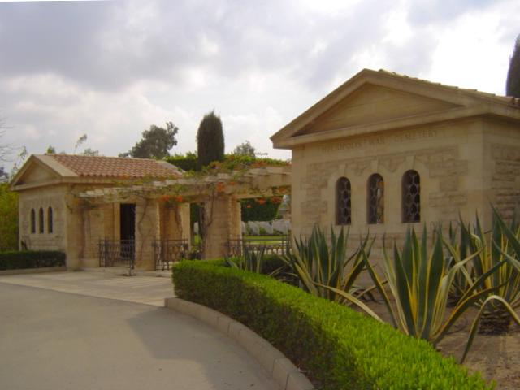

Ithel Thomas Morgan
Died: 23 May 1944
Age: 28 years old
Rank: Leading Aircraftman
Service No.: 1179248
Regiment: Royal Air Force Volunteer
Medals: 1939–1945 Star, Africa Star,
War Medal 1939–1945
War Medal 1939–1945


Ithel Thomas Morgan was born around 1916 in the rural and industrial parish of Mynyddislwyn, Monmouthshire, the son of Tom and Mary Anna Morgan. According to the 1921 Census, a five-year-old Ithel was living with his parents at 24 Aberconway Place in Oakdale. He later married Catherine Morgan, and the couple established their family home a short distance away in neighbouring Pontllanfraith.

Heliopolis War Cemetery, EgyptCWGC Commemorative Site
Ithel volunteered to join the Royal Air Force Volunteer Reserve. Upon completion of his training, he earned the rank of Leading Aircraftman in the RAF's ground echelon, providing the technical skill and logistical support that kept Allied aircraft flying during critical campaigns.
Leading Aircraftman Morgan was deployed overseas to the Mediterranean and Middle East Command. Ground crews in this region faced extreme hardships, working long hours in the desert heat to repair, refuel, and maintain combat aircraft tasked with securing shipping lanes and striking enemy targets across Southern Europe.
While stationed on active duty in Egypt, Ithel passed away on 23 May 1944 at the age of 28.
Following his death, he was laid to rest in the Heliopolis War Cemetery in Cairo, Egypt. This Commonwealth cemetery serves as the final resting place for thousands of airmen and soldiers who lost their lives maintaining the crucial Allied base of operations in Northeast Africa (view listing: 1179248). His name remains proudly honoured within the local history of Oakdale, keeping his memory alive for the generations that follow on the Oakdale War Memorial.